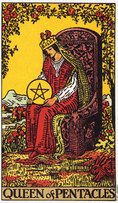

【关键词】 抚育 职业妇女 老板娘 少奶奶
星币皇后长短常热烈丰富而生机盎然的牌，她几乎集结了星币牌组的所有积极因素。星币皇后被鲜花围绕着，草地上枝叶蕃庑，布满红色的果实，有小兔子在旁边奔跑，悠然似乎闻到春暖花开气味，一派宁静祥和。星币皇后以温柔的姿势坐在自己的宝座上。慈爱看着手中的星币及四周的一草一木。白得的亵服代表她的纯洁，红色的长袍代表热情，好客，慈爱和母性。凤冠下 经常的绿色批巾代表她温涵的能力。端详星币皇后地容颜，仿佛感到她在引领大家和她一样思考，一样的感慨。
推测：星币皇后是一张无穷暖和的牌，当大家看到这张牌时，皇后地能量已辐射到大家身上，不管它是以何种身份出现在大家生活中，大家都被激励，被匡助。
星币皇后意味喜爱大自然，而且又有良好的生意眼光
星币皇后安静地坐在那雕工精致的座椅上，耐心的沉思着她的人生和她的星币。她置身于大自然之中，头顶上有红玫瑰，右下脚有一只兔子，后面还有一条河流。天空很晴朗，身边的一切事物可以说都相当美好。
星币皇后代表土元素中的水的部分。水和土的组合可显现于她有能力静下来，好好的感受她内在成功。她以她的身体为荣，并细心的照顾它。
土型的人一般而言会很照顾自己的生活和健康。他们会注意节食和运动，，经常接触大自然，并喜欢肉体上的活动。
星币皇后可以代表占星术中的天秤座(尤其是如果出现在女皇或正义牌的旁边时)，然而它同样也可代表任何土型的星座(金牛座、处女座或魔羯座)。
星币皇后是一个土型的人，处乡野时，会觉得很自在。她会很卖力的工作，并且乐在其中，因为这令她觉得自己有价值。植物和动物对她而言特别有吸引力，在她晚年生活中，庭院将会成为乐趣的一大来源。
她的稳定而具耐心的特质，以及喜欢规律的生活，使植物欣欣向荣。权杖皇后经常不是溺死就是渴死她庭院或室内的植物，而星币皇后则确定照顾好她周遭的生物，是她例行工作的一部分。
她清楚自己的能力和限制，因为她测试过它们。她以一种务实的方式把个性的力量和情感的理解结合起来。她很能享受调理和品尝美味的食物，而作为一个伴侣，她喜欢抚摸对方，以及被对方抚触。
大体上的意义
从一般观点来看，星币皇后是一张代表信任自己能力的牌。她意味经由深思熟虑而带来成功。
作为一个人，星币皇后通常有着敏锐的生意眼光，而且总是喜欢存点钱在身边，好让自己有安全感。在有需要的时候她会很节俭，而且不会任意炫耀财富。她是一个可靠、实际的人，知道应该在那里下功夫可以得到最大的成功。
这张皇后牌是指务实、可靠，并擅长喂养植物和动物。她也喜欢经常到乡间旅行，或漫步于大自然中，因为她需要和自然保持接触，让生命有完整而踏实的感觉。
正位含义：
1.自立而成熟的女性。
2.母爱般暖和包容，只得依靠和信赖的人。
3.温柔而善解人意的人。
4.坚定而有心胸的人或行为。
5.暖和，安宁的气氛。
6.好客，乐于助人。
7.富裕而繁荣的生活。
逆位含义：
1.爱慕虚荣，生活浮华。
2.对人态度恶劣，不友善。
3.浪费浪费的行为。
4.内心冷淡不可信任的人。
两性关系上的意义
星币皇后暗示对某段关系有实质的承诺，而且尊重现实的价值。
皇后牌是在描述一个人，当她在发展两性关系时，对自己充满信心而务实。他认为可靠比热情和兴奋更有价值，因为她是基于长远的考量。正如某位星币皇后所说的：“激情只能维持一个晚上，而友谊则是一生一世的。”
倒立的星币皇后
当星币皇后以倒立出现时，可能是对自己失去信心，并且没有脚踏实地。她需要置身于乡野或大自然当中，因为少了它们，她就可能会变得野心勃勃，并渴望着金钱和权力。
有时候她可能没有能力为她所想要的东西而工作，而且可能为钱而结婚;或是担心缺钱缺没有为稳住财务状况而作任何努力。在远离大自然、植物和动物以及地球的韵律之后，她只好在物质世界中追求稳定。
缺少自信也可能是这张皇后牌倒立所暗示的。这张牌可能是在形容某个人的自我价值是来自他们的贡献或成就，而非它们本身。
从一般的角度来看，皇后牌倒立代表你有必要再一次为稳固基础而努力。现在证实你重新评估你在这世界上的地位，以及抛掉你那狭隘的物质观的时候了。或许多及注意季节的更替、生命的周期以及类似的大自然律动，都是有益的。高高的树木、深邃的河流以及开阔的空间，都有助于洞察你的野心、忧虑以及恐惧。